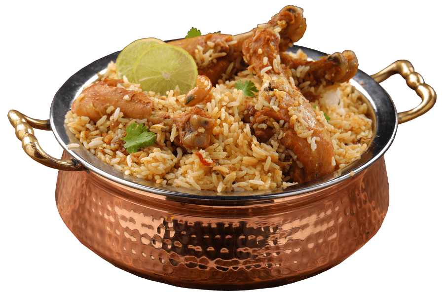

Biriyani

Super Delicious Chicken Biryani.
Fuel up your plate with the most authentic and flavourful masala.
- 1 kg Chicken
- 1 kg Biriyani Rice
- 50 gms Priyom biryani masala powder
- 500 gms Onion
- 1/2 spoon Garlic powder
- 2 Ginger
- 8 - 10 Green Chillies
- 3- 6 Tomatos
- Coriander leaf, Curry leaf & Mint leaf as required
- Cashew Nut & Kaskas paste as required
- Salt to taste
- 1 cup Ghee
- Cut and clean chicken, grind ingredients 5, 6 and 7 in to paste. Slice 8, 9 and keep aside. Crush cashew and kaskas in to paste.
- Fry onions in ghee. Add the paste the sliced ingredients. Add Priyom biriyani masala( best biryani masala ) ,chicken pieces and cook.
- Wash and soak rice for 15 minutes. Fry it in ghee till dry. Add required water and boil. Mix the rice and chicken and pure ghee on in.
- Close the lid and bake for 30 minutes placing fire brands over and under vessel then serve hot.